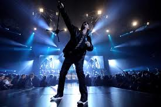

Commercial success (1979-1991)

Following the addition of Jabs, Scorpions left RCA for Mercury Records in the States and Harvest/EMI Electrola worldwide to record their next album Lovedrive. Just weeks after being ejected from UFO for his alcohol abuse, Michael Schenker also returned to the group for a short period during the recordings for the album. This gave the band three guitarists (though Schenker's contribution to the final release was limited to only three songs). The result was Lovedrive, an album which some critics consider to be the pinnacle of their career. Containing such fan favourites as "Loving You Sunday Morning", "Always Somewhere", "Holiday" and the instrumental "Coast to Coast", it firmly cemented the 'Scorpions formula' of hard rock songs mixed with melodic ballads. The album's provocative artwork was named "Best album sleeve of 1979" by Playboy magazine yet ultimately changed for American release. Lovedrive reached No. 55 on the US charts, demonstrating that the band was gathering an international following. After the completion and release of the album the band decided to retain Michael in the band, forcing Jabs to leave. However after a few weeks of the tour, Michael, still coping with alcoholism missed a number of gigs and at one point collapsed on stage. Jabs was brought back to fill in for him on those occasions when he could not perform. In April 1979, during their tour in France, Jabs was brought in permanently to replace Michael.
In 1980 the band released Animal Magnetism, again with a provocative cover this time showing a girl kneeling and a Doberman Pinscher sitting in front of a man. Animal Magnetism contained classics such as "The Zoo" and "Make It Real". Soon after the album's release, Meine began experiencing throat problems. He required surgery on his vocal cords and doubts were raised about whether he would ever sing again.
Meanwhile, the band began working on their next album, Blackout in 1981. Don Dokken was brought in to provide guide and backing vocals while Meine recovered. Meine eventually healed completely and was able to finish the album. Blackout was released in 1982 and quickly became the band's best selling to date eventually going platinum. Meine's voice showed no signs of weakness and fan response to the album was good. Blackout spawned three singles: "Dynamite", "Blackout", and "No One Like You".
Gaining in popularity from their success from "Blackout", Scorpions performed to over 375,000 fans on Day 2 at the three-day US Festival concert held in San Bernardino, California during Memorial Day Weekend of 1983. The concert was aired live on MTV, giving the band wide exposure in a live show.
It was not until 1984 and the release of Love at First Sting that the band finally cemented their status as metal musicians. Propelled by the single "Rock You Like a Hurricane", Love at First Sting climbed the charts and went double platinum in the USA a few months after its release.
MTV gave the album's videos "Rock You Like a Hurricane", "Bad Boys Running Wild", "Big City Nights", and the power ballad "Still Loving You" significant airtime greatly contributing to the album's success. The channel even supplied Scorpions with the nickname "The Ambassadors of Rock" to the chagrin of industry insiders who recognized the executive influence behind the scenes.
The band toured extensively behind Love at First Sting and decided to record and release their second live album, World Wide Live in 1985. Recorded over a year-long world tour and released at the height of their popularity, the album was another success for the band, peaking at No. 14 in the charts in the US and at No. 18 in the UK.
After their extensive world tours, the band finally returned to the studio to record Savage Amusement. Released in 1988, four years after their previous studio album, Savage Amusement represented a more polished and mature sound similar to the style Def Leppard had found success. The album sold well but was considered somewhat of a critical disappointment. However, British heavy rock magazine Kerrang! did award the album five K's out of five.
On the Savage Amusement tour in 1988, Scorpions became only the second Western group (not American) to play in the Soviet Union. Uriah Heep had performed in December, 1987 in Leningrad. The following year the band returned to perform at the Moscow Music Peace Festival. As a result, Scorpions developed an extended Russian fan base and still return to perform.
Wishing to distance themselves from the Savage Amusement style, the band separated from their long-time producer and "Sixth Scorpion", Dieter Dierks, replacing him with Keith Olsen when they returned to the studio in 1990. Crazy World was released that same year and displayed a less polished sound. The album was propelled in large part by the massive success of the ballad "Wind of Change". The song muses on the socio-political changes that were occurring in Eastern Europe and in other parts of the world at the end of the Cold War. On July 21, 1990 they joined many other guests for Roger Waters' massive performance of The Wall in Berlin. Scorpions performed both versions of "In the Flesh" from The Wall. After the Crazy World tour Francis Buchholz, the band's long-serving bassist, left the group.